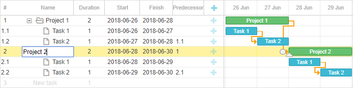

dhtmlxGantt provides two options for editing the content:
Inline editing lets you make any changes right through the grid: create and update tasks, set connections between them, define the start and end dates, or modify the duration - all via the built-in editors.

To enable inline editing, you need to:
var textEditor = {type: "text", map_to: "text"};
var dateEditor = {type: "date", map_to: "start_date", min: new Date(2018, 0, 1),
max: new Date(2019, 0, 1)};
var durationEditor = {type: "number", map_to: "duration", min:0, max: 100};
gantt.config.columns = [
{name: "text", tree: true, width: '*', resize: true, editor: textEditor},
{name: "start_date", align: "center", resize: true, editor: dateEditor},
{name: "duration", align: "center", editor: durationEditor},
{name: "add", width: 44}
];
Related sample: Inline editing
Read details about the inlineEditors object API in the Inline Editors Extension article.
You can take a look at the video guide that shows how to implement inline editing in the grid.
The inline editors are stored in the editor_types configuration object.
There are several predefined inline editors:
var editors = {
text: {type: "text", map_to: "text"},
start_date: {type: "date", map_to: "start_date", min: new Date(2018, 0, 1),
max: new Date(2019, 0, 1)},
end_date: {type: "date", map_to: "end_date", min: new Date(2018, 0, 1),
max: new Date(2019, 0, 1)},
duration: {type: "number", map_to: "duration", min:0, max: 100},
priority: {type:"select", map_to:"priority", options:gantt.serverList("priority")},
predecessors: {type: "predecessor", map_to: "auto"}
};
Starting from v6.3, there are no default limits to minimal and maximal input values of date inline editors.
In case you want the dates visible on the time scale to limit the minimal and maximal values of the date inline editor (unless custom min/max values are provided), you can specify dynamic min/max values:
const dateEditor = {type: "date", map_to: "start_date",
min: function(taskId){
return gantt.getState().min_date
},
max: function( taskId ){
return gantt.getState().max_date
}
};
This functionality is available in the PRO edition only.
Starting from v6.3 Gantt allows specifying types of links as well as lag/lead values directly from inline editor.
In order to do so, you need to use the Link Formatter module and provide an instance of the LinksFormatter into the predecessor editor:
var formatter = gantt.ext.formatters.durationFormatter({
enter: "day",
store: "day",
format: "auto"
});
var linksFormatter = gantt.ext.formatters.linkFormatter({durationFormatter: formatter});
var editors = {
text: {type: "text", map_to: "text"},
start_date: {type: "date", map_to: "start_date",
min: new Date(2018, 0, 1), max: new Date(2019, 0, 1)},
end_date: {type: "date", map_to: "end_date",
min: new Date(2018, 0, 1), max: new Date(2019, 0, 1)},
duration: {type: "duration", map_to: "duration",
min:0, max: 100, formatter: formatter},
priority: {type: "select", map_to: "priority",
options:gantt.serverList("priority")},
predecessors: {type: "predecessor", map_to: "auto", formatter: linksFormatter} };
gantt.config.columns = [
{name: "wbs", label: "#", width: 60, align: "center", template: gantt.getWBSCode},
{name: "text", label: "Name", tree: true, width: 200, editor: editors.text, resize: true},
{name: "start_date", label: "Start", width:80, align: "center",
editor: editors.start_date, resize: true},
{name: "predecessors", label: "Predecessors",width:80, align: "left",
editor: editors.predecessors, resize: true, template: function(task){
var links = task.$target;
var labels = [];
for(var i = 0; i < links.length; i++){
var link = gantt.getLink(links[i]);
labels.push(linksFormatter.format(link)); }
return labels.join(", ")
}},
{name:"add"}
];
Related sample: Inline editing - keyboard navigation mode
You can also specify a custom inline editor. For this, you need to create a new editor object in the following way:
gantt.config.editor_types.custom_editor = {
show: function (id, column, config, placeholder) {
// called when input is displayed, put html markup of the editor into placeholder
// and initialize your editor if needed:
var html = "<div><input type='text' name='" + column.name + "'></div>";
placeholder.innerHTML = html;
},
hide: function () {
// called when input is hidden
// destroy any complex editors or detach event listeners from here
},
set_value: function (value, id, column, node) {
// set input value
},
get_value: function (id, column, node) {
// return input value
},
is_changed: function (value, id, column, node) {
// called before save/close. Return true if new value differs from the original one
// returning true will trigger saving changes, returning false will skip saving
},
is_valid: function (value, id, column, node) {
// validate, changes will be discarded if the method returns false
return true/false;
},
save: function (id, column, node) {
// only for inputs with map_to:auto. complex save behavior goes here
},
focus: function (node) {
}
}
There are some key points to remember in order to implement a reusable editor:
get_value does not modify the task object. The method only returns the current value of the inline editor. If the value is deemed valid, Gantt will automatically update the related task with this value.map_to configuration option of the editor to specify which property of the task should be updated by the editor, but don't hardcode it into the editor. This way allows you to reuse the editor for different columns.hide function, so you can leave it empty. Otherwise, use this method to call a destructor or to clean up any of event handlers you've attached when displaying the editor.is_changed and is_valid functions:
is_changed always returns true, the editor will trigger the update (which can be sent to the backend) each time the editor is closed. This method should return true only if the input value was actually changed in comparison to the initial state; is_valid is used for preventing input of invalid values.save function and specify the map_to option of the input to "auto". In this case, the gantt won't modify the task object, but instead will call the save function when it's time to apply the changes made to the editor.Here is an example of the implementation of a simple number input.
Note, that the hide method can be an empty function, and the save method can be skipped completely.
var getInput = function(node){
return node.querySelector("input");
};
gantt.config.editor_types.simpleNumber = {
show: function (id, column, config, placeholder) {
var min = config.min || 0,
max = config.max || 100;
var html = "<div><input type='number' min='" + min +
"' max='" + max + "' name='" + column.name + "'></div>";
placeholder.innerHTML = html;
},
hide: function () {
// can be empty since we don't have anything to clean up after the editor
// is detached
},
set_value: function (value, id, column, node) {
getInput(node).value = value;
},
get_value: function (id, column, node) {
return getInput(node).value || 0;
},
is_changed: function (value, id, column, node) {
var currentValue = this.get_value(id, column, node);
return Number(value) !== Number(currentValue);
},
is_valid: function (value, id, column, node) {
return !isNaN(parseInt(value, 10));
},
focus: function (node) {
var input = getInput(node);
if (!input) {
return;
}
if (input.focus) {
input.focus();
}
if (input.select) {
input.select();
}
}
};
After that, you can use the editor in the same way as built-in editors:
var numberEditor = {type: "simpleNumber", map_to: "quantity", min:0, max: 50};
gantt.config.columns = [
...
{name: "quantity", label: "Quantity", width: 80, editor: numberEditor,
resize: true},
...
];
Note, that we don't need to implement the hide method in this case, since Gantt detaches the DOM element of the editor automatically and there is nothing else that we need to clean up after the editor closes.
You may need to add a hide logic if you use a complex widget inside an inline editor.
For example, let's consider the following implementation of the DatePicker input using the jQuery one. In this case we need to destroy the date picker widget after it's detached from DOM.
Prerequisites:
<link rel="stylesheet" href="//code.jquery.com/ui/1.12.1/themes/base/jquery-ui.css">
<script src="https://code.jquery.com/jquery-1.12.4.js"></script>
<script src="https://code.jquery.com/ui/1.12.1/jquery-ui.js"></script>
Editor:
gantt.config.editor_types.custom_datepicker_editor = {
show: function (id, column, config, placeholder) {
placeholder.innerHTML = "<div><input type='text' id='datepicker' name='" +
column.name + "'></div>";
$("#datepicker").datepicker({
dateFormat: "yy-mm-dd",
onSelect: function(dateStr){
gantt.ext.inlineEditors.save()
}
});
},
hide: function (node) {
$("#datepicker").datepicker( "destroy" );
},
set_value: function (value, id, column, node) {
$("#datepicker").datepicker("setDate", value);
},
get_value: function (id, column, node) {
return $("#datepicker").datepicker( "getDate" );
},
is_changed: function (value, id, column, node) {
return (+$("#datepicker").datepicker( "getDate" ) !== +value);
},
is_valid: function (value, id, column, node) {
return !(isNaN(+$("#datepicker").datepicker( "getDate" )))
},
save: function (id, column, node) {
},
focus: function (node) {
}
};
let dateEditor = {
type: "custom_datepicker_editor",
map_to: "start_date"
};
gantt.config.columns = [
{name: "text", tree: true, width: '*', resize: true},
{name: "start_date", align: "center", resize: true, editor: dateEditor},
{name: "duration", align: "center"},
{name: "add", width: 44}
];
Related sample: Using jQuery Datepicker in the editor
You need to make use of the save function only when your editor needs to modify multiple properties of the task at once, or if you want it to modify objects different from tasks.
In this case, you can keep a proper implementation of get_value for the sake of built-in validation, but the gantt itself won't try to apply the value of the editor to the task and will call the save function instead.
After save is called, you need to interpret the input values and apply changes to the gantt with a custom code.
Gantt will call the onSave event after the save method is completed, but won't call gantt.updateTask for the modified row.
Note! The save method will be called only if you specify map_to:"auto" in the configuration of the editor:
var editors = {
...
predecessors: {type: "predecessor", map_to: "auto"}
};
A good example of such a control is a built-in predecessor editor. You can find its simplified implementation in the related sample:
Related sample: Built-in predecessor editor
This mode presupposes the use of a mouse pointer for setting focus on cells and hotkeys that allow navigating the cells:
Related sample: Inline editing
In this mode keyboard is used both for navigating and editing grid cells with the help of the predefined keys or keys combinations.
To enable keyboard navigation for editing, you need to:
gantt.plugins({
keyboard_navigation: true
});
gantt.config.keyboard_navigation = true;
gantt.config.keyboard_navigation_cells = true;
Additionally, you can activate a placeholder row, an empty row displayed at the end of the list of tasks. Your end user can edit it to add new tasks into gantt.
gantt.config.placeholder_task = true;
If needed, you can also add automatic detection of the types of tasks:
gantt.config.auto_types = true;
Related sample: Inline editing - keyboard navigation mode
You can also provide custom keyboard mapping, i.e. describe the logic of editors opening by a user, specify handlers of editor-related events (opening, closing of editors, start and end of editing, etc.) in a separate object and then pass this object to the special method that will apply your mapping scheme:
var mapping = {
init: function(inlineEditors){
// inlineEditor module is initialized
// add global listeners for starting/ending editing
},
onShow: function(inlineEditors, node){
// the editor is displayed
},
onHide: function(inlineEditors, node){
// the editor is hidden
// clean the onShow changes if needed
}
};
gantt.ext.inlineEditors.setMapping(mapping);
Related sample: Inline editing - Custom keyboard mapping
You can make mistakes while editing a cell in Grid.
To avoid saving of incorrect values you need to validate the input values before closing an editor. It can be implemented in one of two ways:
Let’s consider behavior of the editor when validation is enabled.
For example, you have opened the editor in a Grid cell via a mouse pointer. The following approach will be applied for your further action:
For information about how to perform validation on the client side or on the server side, see the Validation article.
When validation of editors is enabled Gantt does not save incorrect input values but resets them and closes the editor. So you need to open the cell and to change the values again.
A good way for preventing the editor from closing is to pop up an alert box that gives a user the opportunity to fix the incorrect value. For this purpose you need to use custom keyboard mapping, as in:
function editAnotherCell(inlineEditors){
var value = inlineEditors.getValue();
if(confirm(`does '${value}' look ok to you?`)){
inlineEditors.save();
}
}
var mapping = {
init: function(inlineEditors){
gantt.attachEvent("onTaskClick", function (id, e) {
var cell = inlineEditors.locateCell(e.target);
if (cell && inlineEditors.getEditorConfig(cell.columnName)) {
if (inlineEditors.isVisible()) edit_another_cell(inlineEditors)
else inlineEditors.startEdit(cell.id, cell.columnName);
return false;
}
return true;
});
gantt.attachEvent("onEmptyClick", function () {
inlineEditors.hide();
return true;
});
},
onShow: function(inlineEditors, node){
node.onkeydown = function (e) {
e = e || window.event;
if(e.defaultPrevented){
return;
}
var keyboard = gantt.constants.KEY_CODES;
var shouldPrevent = true;
switch (e.keyCode) {
case gantt.keys.edit_save:
var value = inlineEditors.getValue();
if(confirm(`does '${value}' look ok to you?`)){
inlineEditors.save();
}
break;
case gantt.keys.edit_cancel:
inlineEditors.hide();
break;
case keyboard.TAB:
if(e.shiftKey){
if (inlineEditors.isVisible()) editAnotherCell(inlineEditors)
else inlineEditors.editPrevCell(true);
}else{
if (inlineEditors.isVisible()) editAnotherCell(inlineEditors)
else inlineEditors.editNextCell(true);
}
break;
default:
shouldPrevent = false;
break;
}
if(shouldPrevent){
e.preventDefault();
}
};
},
onHide: function(inlineEditors, node){}
};
gantt.ext.inlineEditors.setMapping(mapping);
gantt.init("gantt_here");
Related sample: Custom keyboard mapping
Back to top